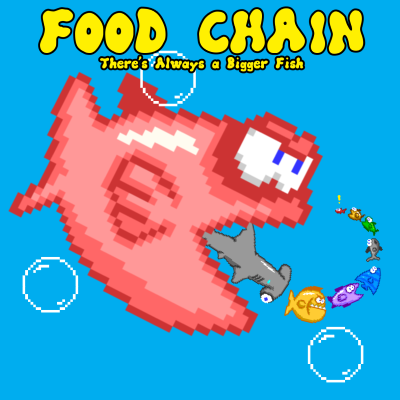

Food Chain: There's Always a Bigger Fish
Dragon King Studios' sorta-hit fish- (and shark-)chomping debut, with over 1,000+ downloads!
App Store Description
It's a fish-eat-fish world...
Since forever, that darn Hammerhead Shark has been king of the ocean, gobbling up every other fish with ease. But no more! Gobbler, the little pink tuna, is tired of being the prey! He may be small now, but with his plucky determination and odd metabolism, he’s going to eat up the competition and get bigger till he reaches the top of the food chain!
The rules of the ocean are simple: run into smaller fish to eat them up and get bigger, and avoid the bigger fish to avoid getting pulverized and sent to fish-heaven. The bigger you get, the more fish you can eat, until the only thing that can threaten you is the Shark. But get big enough, and you can even make this apex predator your prey! Then you’ll start over to do it all again, till poor Gobbler finally joins that big blue ocean in the sky for good. But hey, if you’re lucky, you’ll at least have gotten a high score and had your moment as king of the sea!
- A quick, easy-to-pick-up arcade experience! All you have to know is “Eat fish that are smaller than you, don’t touch fish that are bigger than you!” Oh, and watch out for the shark.
- Start with a leisurely fish buffet, then move your way up to deadly, overcrowded oceans where one false move spells doom for your little pink fish!
- Top the leaderboards and earn all 15 achievements to show everyone who the ultimate ocean predator is!
Behind the Scenes...
I began work on Food Chain during college because I was bored and hadn't worked on a game in a while. Trouble was, I was having difficulty settling on a project that I wanted to work on which wasn't overwhelmingly large. I'd already discarded several projects for being unworkable given my time, skill, and resources.
I decided I'd just make a quick, throwaway game using a collection of royalty-free sprites I had on my computer, just to make something. I picked the fish sprites because it presented a simple, common gameplay hook and I didn't feel like coming up with something more creative. I made up much of the design on the fly and automated whichever parts I could with very simple rules. I wasn't expecting the final product to be anything that'd stay interesting for longer than a minute or two.
However, as the pieces started coming together, I noticed that it actually took some skill to do well at the game, and on later levels, it could be a real test of reflexes and control to weave through the swarms of fish to nab the few little ones that were safe to eat. I put more effort into fine-tuning the different systems, like the prey spawning and level progression, to hit a spot that felt fair to the player without losing that challenge.
I realized I had a real game here, not just a practice exercise. I decided that this would be the first game I released out into the world. It seemed perfect for mobile devices, so I released the game on Google Play.
Of my two games, Food Chain was by far the more successful, being downloaded over a thousand times. The reviews were mixed. While some appreciated the challenge the game offered, many said that the touch screen controls left a lot to be desired (admittedly, they could be rather imprecise, which could be a big problem in the brutally-hard late game. I had a PC build that controlled with the mouse, which the game seemed more suited for. Alas, Androids don't have mice).